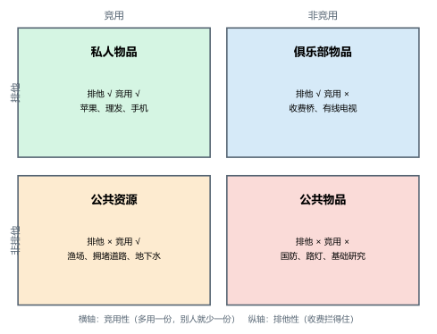
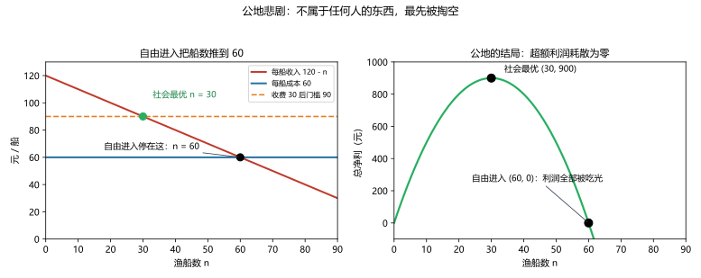
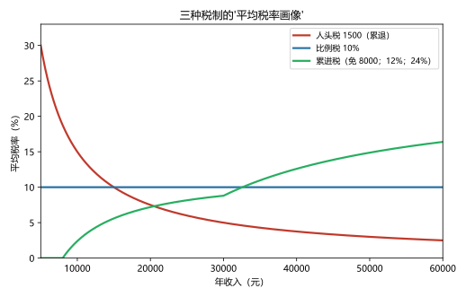

前置：第 09 讲（外部性）、第 05–07 讲（税收与账本）。 预计时间：约 2.5 小时（含作业）。
一句话定位：市场失灵三兄弟的第二、三位（公共物品、公共资源）在本讲与"税制设计"合并收官——这是前半场（市场与政策）的最后一讲。学完它，你会拿到一张"什么该交给市场、什么该交给集体"的分类棋盘，以及评价"税好不好"的两把尺子。
本讲回答什么：
- 怎么给物品分类？哪些该市场给、哪些该政府给？
- 搭便车为什么导致公共物品供给不足？
- 公地悲剧的机制到底是什么？"私有化"能包治吗？
- 什么叫"好税"？"累进税更公平"和"定额税更高效"的争吵有没有答案？
这一讲有真实验证：三人路灯的公共物品账（脚本
scripts/lec10-01_verify_public_goods_tax.py实验 1）；渔场公地的自由进入 vs 社会最优（实验 2）；三种税制的税率结构对照（实验 3）。配图 3 张。
引子：业主大会的三个议程（路灯、小河、物业费）
│
├─ 1. 物品的四格棋盘：排他性 × 竞用性（图 1）
├─ 2. 公共物品：搭便车的世界
├─ 3. 公共资源：公地悲剧（图 2）
├─ 4. 税制设计：什么叫"好税"（图 3）
├─ 5. 边界与纪律
└─ 常见误区 → 本讲小结 → 掌握度自测 → 作业
下一站：§引子。一场业主大会，正好把本讲的四件事全碰齐了。
某小区开业主大会，议程表上有三件事：
三件事的共同点：它们都发生在"没有价格的地方"——路灯没法单独卖给你、河水没法按杯收费、物业费的"公平"根本没有统一标尺。本讲把这三件事一一拆开：先给"没有价格的东西"分类（§1）、再看两场著名的失灵怎么发生（§2 搭便车、§3 公地悲剧）、最后研究那笔"收上来的钱"该怎么设计才叫好（§4）。
给物品分类，不用看它"重不重要"，只看它带哪两条属性：
两条属性一交叉，就是本讲的四格棋盘：
| 竞用（多一份就少一份） | 非竞用（多人共用不打架） | |
|---|---|---|
| 排他（收得了费） | 私人物品（苹果、理发） | 俱乐部物品（收费桥、有线电视） |
| 非排他（拦不住人） | 公共资源（渔场、拥堵道路） | 公共物品（国防、路灯） |

图 1 怎么读：横轴是竞用性（左：竞用；右：非竞用），纵轴是排他性（上：排他；下：非排他）。私人物品格：市场运转最顺（两个条件都齐）；俱乐部物品格：市场能收费提供（但可能长成"自然垄断"，第 13 讲回访）；公共资源格：拦不住人、又会用光——公地悲剧的温床（§3）；公共物品格：拦不住人、又人人想要——搭便车的温床（§2）。
一个边界先声明：四格是"光谱的四个极点"，不是铁笼子——现实物品的落点可以"搬家"：办个围墙收票，公园就从公共资源挪向俱乐部；加密技术一上来，电视信号从"公共物品"变成"俱乐部物品"。分类是为了选对工具，不是给物品钉终身标签。
公共物品（public goods）：既非排他、又非竞用的物品。 两个特征各有一个直接推论：
- 非排他 → 收不了费（拦不住没付钱的人）→ 私人企业没有生意可做；
- 非竞用 → 多服务一个人的边际成本为零（多一盏路灯照亮一条新路过的行人，成本不增加）→ 从效率看，应该让所有人免费享用。
搭便车者（free rider）：享受了物品的好处，却没有为之付费的人。
不是什么人品问题——是激励结构的直接结果：既然"拦不住我没付钱"，那么"等别人买单，我白用"对每个人都是理性的。看一个三人小社区的路灯账（脚本 lec10-01 实验 1 实测）：
如果强制平摊呢（每家 100 元）：甲净赚 50、乙净赚 20、丙净亏 20——总盈余还是 +50，但丙会被"多数"按着头买单。这两个坑（供给不足 + 少数被强制）就是公共物品供给的两难："市场给不够，强制供给又绕不开'凭什么'"。
公共物品的主流解法是政府用税收提供（国防、路灯、基础研究、公共卫生）：税收解决"搭便车"（不缴也得缴），强制解决"收不齐钱"。但两个提醒别丢：
下一站：棋盘左下角——拦不住人、又会用光的那一格。
公共资源（common resources）：非排他、但竞用的物品——谁都能来用（不收门票），但多一个人用，别人的那份就薄一分。
"公地悲剧（tragedy of the commons）"这个名字来自一个古老的寓言：一片人人可用的公共牧场，每个牧人都想"多放一头牛"——多放的那头牛的收入归自己，草场退化的代价却摊给所有人。结果：人人加牛，直到草场废掉。
把第 09 讲的语言搬出来，机制一句话就清楚：你多放一头牛，对"其他所有牧人"施加了一份负外部性（挤占草场）——而这份外部成本不经价格、也不进你的账。于是：
村里一片渔场（不属于任何人）：每艘船的收入 = 120 − n（n 是总船数——船越多，每人捕得越少），每艘船的私人成本 = 60。看自由进入会发生什么（脚本 lec10-01 实验 2 实测）：
| 船数 n | 30（社会最优） | 40 | 50 | 60（自由进入） |
|---|---|---|---|---|
| 全渔场总净利 | 900 | 800 | 500 | 0 |

图 2 怎么读：左图从"单船视角"看自由进入的逻辑——收入线（120 − n）随船数下降，降到与成本线 60 相交处（n = 60），"赚头"消失，船就停了。绿点是社会最优 n = 30（多出的船其实在互相挤瘦腰包）。右图是"全村视角"：总净利曲线是一条先升后降的山坡，峰在 30（900）；自由进入的终点在 60——坡底，利润全部被吃光（0）。上一讲的"外部性"在这里换了个数字，机制一模一样：个体不算对别人的挤占，一步到位地"各扫门前雪"，合起来就开到了坡底。
牧场（原版）、渔场、拥堵的道路（你上路，让别人更堵——"拥堵费"就是为它设计的庇古税）、地下水层（抽水竞赛）、公海、"空中的垃圾场"（大气）。共同特征：便宜甚至免费进入 + 竞用。
| 工具 | 做法 | 逻辑 | 局限 |
|---|---|---|---|
| 管制 | 限量（船数、天数、限号） | 直接掐住总量 | 一杆子定数，不知道谁更值得用；执行成本 |
| 税/收费 | 每船收 30 → 进入门槛抬到 90 → n 回到 30 | 把"挤占的外部成本"塞回个体账（庇古税同胞） | 税率要估准；对穷使用者可能过重 |
| 可交易配额 | 发 30 张捕捞证、允许互卖 | 总量封顶 + 让"留在场上的人"是最有效率的 30 个 | 初始分配（免费发给谁？）的公平争议 |
| 私有化/规则自治 | 渔场承包给一户/社区自订轮捕规则 | 让"所有者"把挤占内化（他会自己算总账） | 不是万能：公海、大气划不了界；划给谁本身就是分配问题；监管成本高 |
四件套和上一讲的三工具是同一批工具的"限量版"再组合——核心动作永远是同一个：让使用者面对的账，等于社会的账。
下一站：三个议程办完了两个。最后那个"吵不完"的——物业费到底怎么收才对？这要在税制设计里找答案。
到这一讲，"税"已经见过三个身份：筹资工具（05 讲楔子）、抑价工具（07 讲 DWL 与拉弗）、纠偏工具（09 讲庇古税）。本节处理第一个身份的验收：作为"收钱的机器"，什么样的设计才算好？先记住两个要点：
受益原则（benefit principle）：谁受益谁付钱。（"燃油税修路"——开车多的人修路受益多，多付。）
支付能力原则（ability-to-pay principle）：能力强的人多付钱。（收入高的人多缴税——税收作为再分配工具。）
再加两个维度：
看三人社区（收入 10000 / 20000 / 50000）在三套税制下的画像（脚本 lec10-01 实验 3 实测）：
| 税制 | 税额（甲/乙/丙） | 平均税率 | 边际税率 |
|---|---|---|---|
| 人头税（每人 1500） | 1500 / 1500 / 1500 | 15.0% / 7.5% / 3.0%（累退） | 0% |
| 比例税（10%） | 1000 / 2000 / 5000 | 10% / 10% / 10% | 10% |
| 累进税（免 8000；12%；24%） | 240 / 1440 / 7440 | 2.4% / 7.2% / 14.9%（递增） | 12% / 12% / 24% |

图 3 怎么读：横轴收入、纵轴平均税率。红线（人头税）随收入下降——累退；蓝线（比例税）水平；绿线（累进税）随收入上升。（"累退"不等于"税额减少"——是"负担占比随收入变轻"。）三线在图中相交、纠缠——这就是"税制结构"的样子。
定额税（lump-sum tax）：不论收入高低，每人一个固定数（人头税就是它的粗版）。它的理论地位很特殊：
用一个加班决策看清楚"边际税率为什么是行为的朋友或敌人"（实验 3 下半，工资 100/小时、休闲的边际价值 75）：
| 边际税率 | 加班到手的净收入 | vs 休闲价值 75 | 决定 |
|---|---|---|---|
| 0% | 100 | 高于 | 加班 |
| 25% | 75 | 持平 | 无所谓 |
| 40% | 60 | 低于 | 不加班（回家） |
一句话记住分工：边际税率决定"行为"，平均税率决定"账单"。
"累进税最公平！""定额税最高效！"——两句话其实各说了一个轴，没有唯一答案，但有清晰的分歧地图：
（现实税制的素描：现代税制普遍是混合体——增值税/消费税类偏"宽税基"（效率思路），个人所得税偏累进（支付能力思路），社保偏专项受益——再叠加 05 讲的"名义归宿不等于实际归宿"警报，没有一个国家的税制是教科书单件工具。）
下一站：本讲的边界清单——也是前半场（市场与政策）的收尾提醒。
一页纸的骨架：
scripts/lec10-01，解释输出里每一个数字（350、60、900、1500、7440、0%/25%/40%……）。答案只能用已教概念（本讲范围：四格分类、公共物品与搭便车、公共资源与公地悲剧、四件套解法、税制两轴、平均/边际税率、三种结构、定额税；可复用外部性与税工具）。先独立做，再对答案。
Q1. 分类题：把下列八项放进四格棋盘：国防、公海渔业、苹果、收费高速公路、无线广播、拥堵的市中心道路、有线电视、演唱会门票。
参考答案：
Q2. 计算·公共物品：四人社区考虑装一台净水设备：成本 1000 元；四人支付意愿分别为 400、300、200、150。
(1) 社会意义上该不该装？ (2) 若要求任何一个人单独出资，会怎样？ (3) 若平摊（每人 250），谁愿意、谁反对？ (4) 用一句话概括这个结局揭示的难题。
参考答案： (1) 合计意愿 1050 > 成本 1000——该装（净益 +50）。 (2) 每人的意愿都低于 1000——无人愿独担（搭便车：等别人出钱）。 (3) 平摊 250：甲（+150）、乙（+50）愿意；丙（−50）、丁（−100）反对。 (4) 公共物品的两难：市场（自愿）供给不足；强制供给能成事，但要面对"少数反对者凭什么买单"的问题。
Q3. 计算·公地：某渔场：每船收入 = 100 − n（n 为总船数）；每船成本 40。
(1) 自由进入的船数是多少？总净利多少？ (2) 社会最优船数是多少？总净利多少？ (3) 若要收费矫正到社会最优，每船应收多少？
参考答案： (1) 只要 就有人进：均衡在 n = 60；总净利 60×60 − 60² = 0。 (2) n = 30；总净利 60×30 − 900 = 900。 (3) 进入门槛抬到 ： 且 n = 30 → 30。 （对照本讲实验：结构相同、数字平移——机制是"把外部挤占成本塞回个体账"。）
Q4. 计算·税率结构：某地个税：免征额 6000；6000–25000 部分税率为 10%；25000–50000 部分 20%；50000 以上部分 30%。计算四位纳税人（收入 5000、15000、40000、80000）的：应纳税额、平均税率、边际税率。
参考答案：
| 收入 | 应纳税额 | 平均税率 | 边际税率 |
|---|---|---|---|
| 5000 | 0 | 0% | 0% |
| 15000 | (15000−6000)×10% = 900 | 6% | 10% |
| 40000 | 19000×10% + 15000×20% = 4900 | 12.25% | 20% |
| 80000 | 1900 + 25000×20% + 30000×30% = 15900 | 19.875% | 30% |
验算：40000 的税额 = 1900 + 3000 = 4900 ✓；80000 = 1900 + 5000 + 9000 = 15900 ✓。
Q5. 辨析题：判断对错并简说理由。
(a) "公共物品就是政府生产的东西。" (b) "搭便车是人的道德问题。" (c) "定额税没有无谓损失，所以应该全面推广。" (d) "累进税一定比比例税更公平。"
参考答案： (a) 错。定义看两特征（非排他 + 非竞用）；政府生产 ≠ 政府提供，反之亦然（§2.1–2.3）。 (b) 错。它是"拦不住不付费者"的激励结构产物；制度一变，行为会变（§2.2、误区 3）。 (c) 不成立。定额税在效率轴近乎满分，但公平轴极端累退——两轴都要过（§4.5–4.6）。 (d) 不一定。按支付能力原则，累进更公平；按受益原则，累进未必公平——这是规范分歧，没有唯一答案（§4.6）。
Q6. 简答·公地机制与解法：用"负外部性"的语言解释公地悲剧的机制（要求出现"私人成本 vs 社会成本"），并列出两种解法及其一句话逻辑。
参考答案： 机制：每个使用者多用一个单位资源，其私人成本只包含自己付出的部分，而社会成本还要加上"对他人份额的挤占"——这份差额（负外部性）不被个体考虑，于是每个人"能多用就多用"，总量一路冲到"平均收益 = 私人成本"处，超额利润被吃光。 解法（任选两种）： ① 收费/税（如每船 30）：把外部挤占成本塞回个体账，进入门槛抬到社会最优； ② 可交易配额（如 30 张证）：总量封顶，让留在场上的使用者最有效率； （③ 私有化/社区自订规则：让"所有者"自己算总账——但有划界与公平的边界。）
Q7. 综合·业主大会收官：回到引子，三件事各给一个"裁决"：
(1) 路灯：这一批成本 900 元；三户的意愿：甲 400、乙 300、丙 250。该不该装？若平摊（每户 300），谁支持谁反对？净益账各是多少？ (2) 小河：定性分析"鱼被钓光"的机制，并给一个"既治标又有逻辑"的方案（任选一件工具）。 (3) 物业费：三个候选方案——按人头、按建筑面积、按收入——各对应哪条公平原则（受益 / 支付能力）？为什么"吵不完"？
参考答案： (1) 合计意愿 950 > 900——该装。平摊 300：甲净益 +100、乙 0、丙 −50——甲、乙支持、丙反对（与 §2.2 三人路灯同构）。 (2) 机制：小河无人拥有 → 每个垂钓者"我少钓也被别人钓走" → 多钓的私人账里不含对他人机会的挤占（负外部性）→ 过度捕捞。方案示例：办理付费垂钓证（把外部成本塞回个体账）；或把河段承包给一户/合作社管护（私有化/自治，划清权属与责任）。 (3) 按建筑面积≈受益原则（房子大多用公共设施、多担）；按收入≈支付能力原则（能力强的多担）；按人头≈近似定额（简洁但累退）。"吵不完"因为……公平时两条原则的选择是规范分歧，没有效率口径那样的客观裁判——只能通过业主大会这种集体选择机制来定规则（这也正是"公共选择"的现实版）。 验证：(1) 与实验 1 结构一致；(3) 与 §4.6 的"分歧地图"一致。
Q8. 简答·开放：公共物品该由谁提供？：政府、市场、社区——三方各能在什么条件下提供公共物品/管理公共资源？请各给一个例子或原理，并指出各自的软肋。
参考答案：
下一讲预告：第 11 讲《生产成本》——前半场（市场与政策）收官，后半场（企业与产业）开工。第一站是企业的"底账"：成本到底是什么（机会成本 vs 会计成本）、经济利润为什么总和会计利润打架、从生产函数到整套成本曲线、以及那条"边际成本必然穿过平均总成本最低点"的铁律。